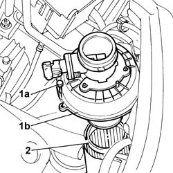
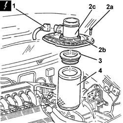
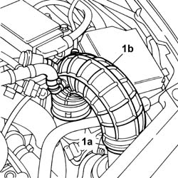
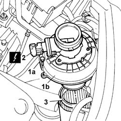

1048A14 air cleaner filtering element - replace.
- Path
- Procedures > 10 ENGINE > 1048 ENGINE AIR SUPPLY CIRCUIT > 1048A VACUUM AIR CIRCUIT > 1048A14 air cleaner filtering element - replace.
- Kind
- repair procedure (removal / refitting; the operation number is the code)
- Applies to
- engines: 2.0 TB, 2.4 20V, 3.0 V6, 3.2 V6; all production periods
- Interactive page
- https://sloeber94.github.io/elrnDB-lThss/en/#/74987
Applies to: engines: 2.4 20V; all production periods
 Removing
Removing
 Refitting
Refitting- Make sure that the ignition key is in the OFF position, then disconnect the negative battery terminal.
See in Op. 7040D50 ENGINE COMPARTMENT UPPER SOUND INSULATION SHIELD - R.R.
See in Op. 1048A28 vacuum air circuit resonator pipe - r+r
See in Op. 1048A21 AIR INLET HOSE FROM INTAKE TO FILTER - R.R.
1. Undo the bolts (1a) and place the air filter (1b), complete with air flow meter, at the side.
2. Remove the filter element from the air filter casing.

Applies to: engines: 2.4 20V; all production periods
Refitting
Removing- Position a new air cleaner filter element in its housing.
- Fit the cover for the air filter, complete with air flow meter, and secure it using the bolts.
See in Op. 1048A21 AIR INLET HOSE FROM INTAKE TO FILTER - R.R.
See in Op. 1048A28 vacuum air circuit resonator pipe - r+r
See in Op. 7040D50 ENGINE COMPARTMENT UPPER SOUND INSULATION SHIELD - R.R.
- Connect the negative battery lead.
Applies to: engines: 3.0 V6, 3.2 V6; all production periods
Removing
RefittingSee in Op. 5530B10 BATTERY - R.R.
- Make sure that the ignition key is in the OFF position, then disconnect the negative battery terminal (-).
- [7040D12]
- [7040D14]
See in Op. 1048A21 AIR INLET HOSE FROM INTAKE TO FILTER - R.R.
See in Op. 1048A28 vacuum air circuit resonator pipe - r+r
1. Disconnect the electrical connection from the air flow meter.
2. Undo the bolts (2a) and remove the air filter cover (2b), complete with air flow meter (2c).
3. Remove the air duct.
4. Remove the air cleaner filter element.

Applies to: engines: 3.0 V6, 3.2 V6; all production periods
Refitting
Removing- Fit a new air cleaner filter element.
- Fit the air duct.
- Fit the cover for the air filter, complete with air flow meter, and secure it using the bolts.
- Connect the electrical connection to the air flow meter.
See in Op. 1048A28 vacuum air circuit resonator pipe - r+r
See in Op. 1048A21 AIR INLET HOSE FROM INTAKE TO FILTER - R.R.
- [7040D14]
- [7040D12]
- Connect the negative battery terminal.
Applies to: engines: 2.0 TB; all production periods
Removing
RefittingSee in Op. 7040D50 ENGINE COMPARTMENT UPPER SOUND INSULATION SHIELD - R.R.
See in Op. 1048A21 AIR INLET HOSE FROM INTAKE TO FILTER - R.R.
1. Disconnect the band (1a) and move the pipe (1b) away from the air flow meter.

Applies to: engines: 2.0 TB; all production periods
1. Undo the bolts (1a) fixing the air filter casing cover (1b).
2. Disconnect the electrical connection for the air flow meter.
3. Remove the filter element from the casing.

Applies to: engines: 2.0 TB; all production periods
Refitting
Removing- Replace the old filter element with a new one which has the same specifications.
- Fit the new filter element in the filter casing.
- Tighten the bolts fixing the air filter casing cover.
- Connect the air flow meter connector.
- Connect the air inlet pipe to the air flow meter.
See in Op. 1048A21 AIR INLET HOSE FROM INTAKE TO FILTER - R.R.
See in Op. 7040D50 ENGINE COMPARTMENT UPPER SOUND INSULATION SHIELD - R.R.
Topics linked from this page (4)
- 1048A21 AIR INLET HOSE FROM INTAKE TO FILTER - R.R.
- 1048A28 vacuum air circuit resonator pipe - r+r
- 5530B10 BATTERY - R.R.
- 7040D50 ENGINE COMPARTMENT UPPER SOUND INSULATION SHIELD - R.R.